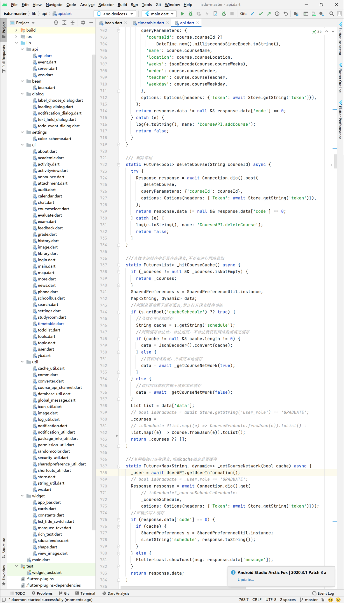
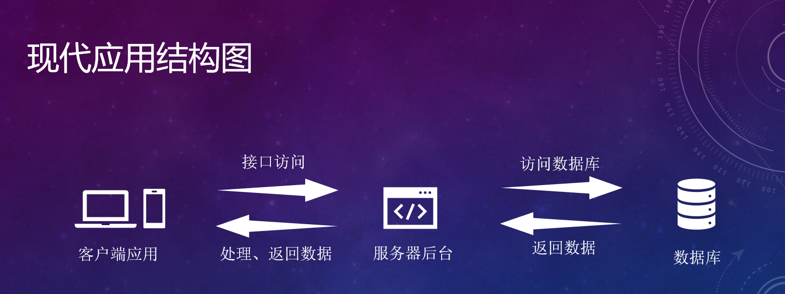
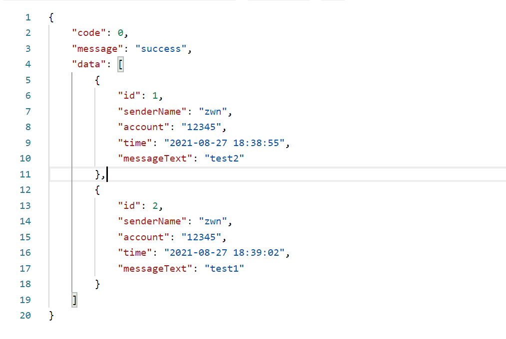

第三次培训：网络部分
补充：项目分包的问题
项目分包，其实跟电脑分文件夹归类是一个道理。如果大家类比较少，不分包也就算了，但如果像这样：

不分包你半天都找不到你想找的那个类。
所以还是有必要介绍一下项目分包（架构）的问题，对大家大一下课设也有很大帮助。
MVC：
就给大家介绍一下最简单的MVC：
MVC模式（Model–view–controller）是软件工程中的一种软件架构模式，把软件系统分为三个基本部分：模型（Model）、视图（View）和控制器（Controller）。
MVC模式最早由Trygve Reenskaug在1978年提出，是施乐帕罗奥多研究中心（Xerox PARC）在20世纪80年代为程序语言Smalltalk发明的一种软件架构。MVC模式的目的是实现一种动态的程序设计，使后续对程序的修改和扩展简化，并且使程序某一部分的重复利用成为可能。除此之外，此模式透过对复杂度的简化，使程序结构更加直观。软件系统透过对自身基本部分分离的同时也赋予了各个基本部分应有的功能。专业人员可以依据自身的专长分组：
- 模型（Model） - 程序员编写程序应有的功能（实现算法等等）、数据库专家进行数据管理和数据库设计(可以实现具体的功能)。
- 视图（View） - 界面设计人员进行图形界面设计。
- 控制器（Controller）- 负责转发请求，对请求进行处理。
以上引自维基百科。
所以对应到我们的安卓项目中要怎么分包呢？就现在而言，其实很简单：
- Model（entity）：对应到bean
- View：其实就是我们写的xml文件，如果有同学用java定义组件就单独分离出来
- Controller：其实就是我们的activity的类文件
- Dao：对应到封装的对数据库的操作
- Util：工具类（比如recyclerview的adapter）
如上等等，你可能觉得好像项目并没有什么变化，那是因为，一方面，安卓原生对界面和逻辑的解耦比较彻底，另一方面，现在项目还太小，甚至不足以称之为项目。但这个思想必须要有，越早越好。（踩坑经历）
javaBean:类与对象
我们常常讲抽象类与实例化对象，其实也正是这种思想.
类是对一类事物的描述，是抽象的
对象是一类事物的实例，是具体的
类是对象的模板，对象是类的实体
java中的类：
现实中，描述一类事物：
- 属性：就是该事物的状态信息。
- 行为：就是该事物能够做什么。
举例：猫。
属性：名字、年龄、颜色。
行为：走、跑、吃用代码来讲：
1 | public class Cat { |
java中的对象：
如果将类看做模板，那么类可以看做模板加工出的实体。这个实体要有模板的所有属性，也能执行模板的所有行为。
以上面的猫为例，进行对象的实例化：
1 | Cat whc = new Cat(); |
可能会问，都说了实体要有模板的所有属性，也没看见你写你这猫的属性啊？
那是因为每个类都有约定对象该如何进行实例化的构造方法，如果类里面没写，默认会添加一个没有参数的构造方法。我们也可以自己定义，如：
1 | public class Cat { |
如果这时候你再像上面那样定义whc这个cat，就会报错。这是因为，我们的构造方法约定了在构造猫这个对象时要传入猫的所有属性，而且我们自定义了构造方法，java便不再添加默认的构造方法。但是，一个类可以有多个构造方法。
正解如下：
1 | Cat eric = new Cat("whc",6,"yellow"); |
并且，我们还能让whc执行命令：
1 | whc.eat(); |
完整代码如下：
1 | public class Cat { |
PS.
getter与setter可以自行查阅，比较好理解
json:网络通信的轻量级的数据交换格式
引入：
我们应当注意，在网络传输过程中很少传递对象。一方面，网络传输采用的是流的方式，本身就涉及一定的编码问题，这就导致一个对象传递过来还需要一定的操作才能进行还原，另一方面，传递对象的成本比较高，而且对象的方法是无法编码传递的。（并不是完全无法传输，只是不推荐）
那么一个对象是如何通过网络传输呢？这就用到json了。

对象在网络中的传递涉及序列化与反序列化，序列化是将对象状态转换为可保持或传输的格式的过程。与序列化相对的是反序列化，它将流转换为对象。这两个过程结合起来，可以轻松地存储和传输数据。
比如，javaBean：
1 | public class Cat { |
一个名叫whc的cat对象：
1 | Cat whc = new Cat("whc",6,"yellow", new String[]{"lzw", "kmh"}); |
对应的json
1 | { |
调用的方法是：
1 | System.out.println(JSON.toJSONString(whc)); |
JSON 语法规则
- 数据为 键/值 对。
- 数据由逗号分隔。
- 大括号保存对象
- 方括号保存数组
JSONObject：
使用大括号环绕
内容为键值对，键值使用半角冒号分开
键的类型为字符串
值的类型可以为数字、字符串、布尔值、
JsonObject、JsonArray获取值时通过键来获取
与Java的Map对应
比如，我可以将序列化的满足json格式的String反序列化为JSONObject：
1 | Cat whc = new Cat("whc",6,"yellow", new String[]{"lzw", "kmh"}); |
但能不能将JSONObject转换成Cat呢？答案当然是可以的，但并不能直接进行强制类型转换，大家可以自己封装一个方法。
JSONArray：
使用方括号环绕
内容可以是数字、字符串、布尔值、
JsonObject、JsonArray根据数组下标获取每一项
与Java的List对应
比如：
1 | Cat whc = new Cat("whc",6,"yellow", new String[]{"lzw", "kmh"}); |
库：
1 | implementation 'com.alibaba:fastjson:1.2.62' |
HTTP请求:
| 请求类型 | 描述 |
|---|---|
| get | 请求指定的页面信息，并返回实体主体。 (提交数据放在URL之后) |
| post | 向指定资源提交数据，进行处理请求（例如提交表单或者上传文件）。数据被包含在请求体中。POST 请求可能会导致新的资源的建立和/或已有资源的修改。(请求数据放在body中) |
java中使用HTTP——HttpURLConnection
1 | //样例,仅供参考 |
OkHttp3
一个比较好用的第三方库，支持多种Http请求，异步处理结果等等，建议使用
大致结构：
1 | //样例，仅供参考，OKHTTP其他用法自行百度，可以直接copy，但是自己先学会如何使用 |
get与post请求的区别：
最直观的区别是，get的参数写在URL里，用？（占位符）与ip或者域名隔开，参数之间用&隔开。而post放在body里。
另外，get一般用于请求资源，RESTful API中get一定是用来请求资源的。post用于向服务器发送资源/数据。
对于okhttp中执行post请求，代码大致如下：
1 | private void sendPost(String address, okhttp3.Callback callback,RequestBody body) { |
其中requestBody大致如下：
1 | MultipartBody.Builder builder = new MultipartBody.Builder() |
注意：
Android中发起http请求需要新开一个线程进行操作，不能在UI主线程中进行网络访问，不然容易导致主线程阻塞，app崩溃（崩溃理由不会的自行百度）。OKhttp会自动给你开一个新的线程。
UI的更新只能在主线程进行，不然app也会崩溃（原因不会的自行百度），解决方法自行百度。
如果你想更新UI，提示可以使用runOnUiThread，AsyncTask、Handler等，用法自行学习。
21级使用runOnUiThread，AsyncTask、Handler等可以加分，20级强制使用（如果需要用）。
Android中的网络访问限制
Manifest中需要申请INTERNET权限
Android P及以上的系统有强制使用https限制，需手动编写配置文件绕过
这个具体使用虽然我写了，但我不放，自行百度，很简单。（我再写的话你们作业就直接全copy完了），大家不要怕踩坑，只有踩坑才会积累经验。
接口文档
| 修订版本号 | 修订日期 | 修改人 | 修改内容 |
|---|---|---|---|
| 1.0 | 2021.8.27 | 赵炜宁 | Init |
| 1.1 | 8.28 | 赵炜宁 | 对发动态的身份认证做了优化 |
| 2.0 | 10.16 | 赵炜宁 | 更改端口；增加上传头像 |
| 2.1 | 10.20 | 赵炜宁 | 检修，迁移；增加获取用户名 |
项目基本说明
项目接口根目录为http://82.156.169.66:8181，下方以URL代替
统一的错误码
| 错误码 | 信息 |
|---|---|
| -1 | 输入的信息不完整（缺少）或不合法（为空） |
| -2 | 用户不存在或已被注册 |
| -3 | 密码错误 |
返回值是由code，message，data构成的json，下文的传出参数指的是data部分
1、用户操作 URL：/user
1.1 登录
| URL | method |
|---|---|
| /login | GET |
| 传入参数 | 类型 | 是否可为空 | 说明 |
|---|---|---|---|
| account | String | 否 | 账号 |
| password | String | 否 | 密码 |
也就是说登录的完整URL为http://82.156.169.66:8181/user/login
成功之后没有返回的数据，样例：

1.2 注册
| URL | method |
|---|---|
| /register | GET |
| 传入参数 | 类型 | 是否可为空 | 说明 |
|---|---|---|---|
| account | String | 否 | 账号 |
| password | String | 否 | 密码 |
| username | String | 否 | 用户名 |
1.3 修改密码
| URL | method |
|---|---|
| /changePassword | GET |
| 传入参数 | 类型 | 是否可为空 | 说明 |
|---|---|---|---|
| account | String | 否 | 账号 |
| oldPwd | String | 否 | 旧密码 |
| newPwd | String | 否 | 新密码 |
1.4 获取用户名
| URL | method |
|---|---|
| /username | GET |
| 传入参数 | 类型 | 是否可为空 | 说明 |
|---|---|---|---|
| account | String | 否 | 账号 |
| 传出参数 | 类型 | 说明 |
|---|---|---|
| username | String | 用户名 |
2、动态 URL：/message
2.1 发布动态
| URL | method |
|---|---|
| /send | POST |
| 传入参数 | 类型 | 是否可为空 | 说明 |
|---|---|---|---|
| senderName | String | 否 | 发动态的用户名 |
| account | String | 否 | 账号 |
| messageText | String | 否 | 动态内容 |
2.2获取动态
| URL | method |
|---|---|
| /get | GET |
传出参数data为JSONArray
| 单个传出参数 | 类型 | 说明 |
|---|---|---|
| id | int | id（序号） |
| time | String | 发布时间 |
| senderName | String | 发动态的用户名 |
| messageText | String | 动态内容 |
| account | String | 账号 |
样例：
3、 发布头像与获取头像(RESTful API)
3.1 发布头像
| URL | method |
|---|---|
| /headImage | POST |
| 传入参数 | 类型 | 是否可为空 | 说明 |
|---|---|---|---|
| account | String | 否 | 账号 |
| file | file | 否 | 图片文件 |
3.2 获取头像
| URL | method |
|---|---|
| /headImage | GET |
| 传入参数 | 类型 | 是否可为空 | 说明 |
|---|---|---|---|
| account | String | 否 | 账号 |
| 单个传出参数 | 类型 | 说明 |
|---|---|---|
| url | String | 图片保存的地址 |
作业：
通过三次次培训，完成一个“树洞”或者“表白墙”
基本要求：
在第二次作业的基础上使用网络
使用网络进行登录，注册，发布动态，获取动态。
进阶任务：
1、完成修改密码功能。
2、更加完善及美观的界面（类似于校圈圈那种，而不是可怜巴巴的三个界面）。
3、实现头像功能。
三个进阶任务完成后都有相应加分
提交方式：将src文件夹打包后发送到邮箱 2134356214@qq.com
第二次作业依旧要交，发送至邮箱 718102754@qq.com
DDL：10月25日（周一）中午12:00